API Workshop - API Testing Tools
Sections:
Restful API Testing
API testing is a necessary task to do while building APIs.
Instead of using a browser or typing into a UI and clicking buttons, you can test APIs using tools such as Curl and Postman.
Using a Rest Client you can make Rest calls such as for HTTP Verbs such as:
When we test an API, we deal with JSON, XML, and Web Services.
3rd Party APIs
Here is a list of 3rd Party APIs:
Go to Programmable Web to get a complete list of 3rd Party APIs you can utilize
Testing Restful APIs
You can utilize many different types of tools to test APIs such as:
There are other Rest Clients you can use I just listed a few here
Postman Rest Client Advantages
I tend to favor Rest Clients like Postman because it helps to automate testing Restful APIs if you utilize some of its advanced features
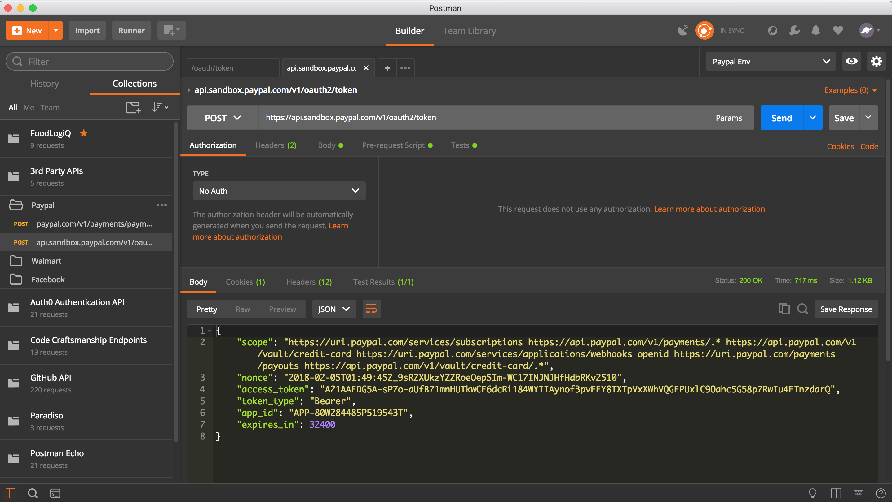
Notice here that you can create collection folders that can categorize APIs.
You can do much more than this however
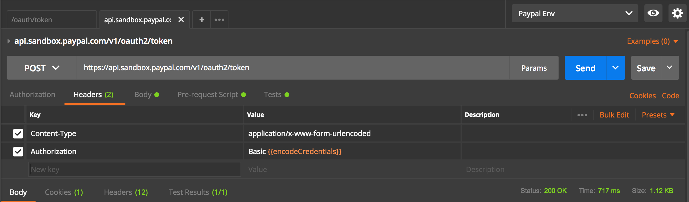
Notice here that Basic {{encodeCredentials}} has curly braces around encodeCredentials
In Postman you surround variables in double curly braces
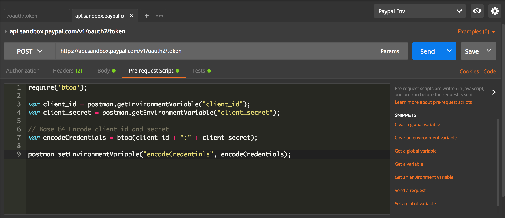
If you want to set variables before the HTTP call goes out than using Pre-request Script is what you want
Pre-request scripts are snippets of code associated with a collection request that are executed before the request is sent.
This is perfect for use-cases like including the timestamp in the request headers or sending a random alphanumeric string in the URL parameters.
Pre-request scripts are written in JavaScript, and the syntax is exactly like that of test scripts except that the response object is not present.
Notice here that I am using common js syntax in Postman and in particular require('btoa')` which is using Postman Sandbox API
You can find a more complete list in the Postman Sandbox API reference
You can also read Postman Sandbox for other libraries available in Postman Rest Client
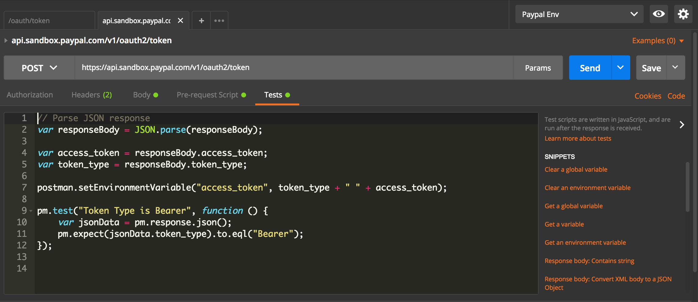
Notice here that the Test script section is similar to Pre-Request Script
With Postman you can write and run tests for each request using the JavaScript language.
But more than that you can set variables in the Test script section that you can save for later use
Notice here the use of postman.setEnvironmentVariable("access_token", token_type + " " + access_token); to set access_token
This is really useful because we can save the access_token for other Rest calls
Instead of manually setting the access token in a variable each day since access tokens tend to expire quickly you can use the tests script section to do that in an automated way.
Notice that we also wrote a test in the test script section as well
// Parse JSON response
var responseBody = JSON.parse(responseBody);
var access_token = responseBody.access_token;
var token_type = responseBody.token_type;
postman.setEnvironmentVariable("access_token", token_type + " " + access_token);
pm.test("Token Type is Bearer", function () {
var jsonData = pm.response.json();
pm.expect(jsonData.token_type).to.eql("Bearer");
});
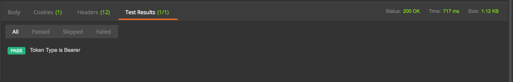
Notice here we get a passing test since we got an access token from the Paypal API
Notice here that we set the environment for Paypal here
Here we can use global variables that can be used per environment
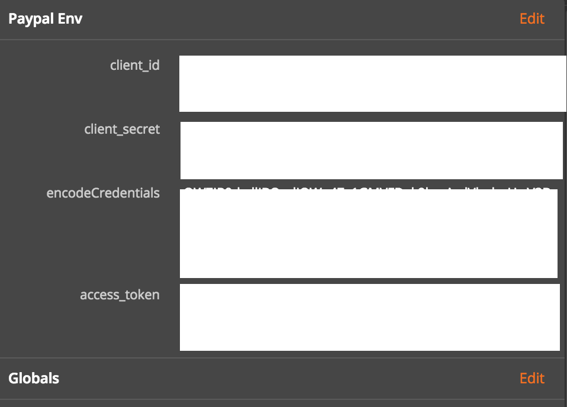
Here I greyed out the environment variables for security reasons but you can read more about Global Variables at Postman Docs
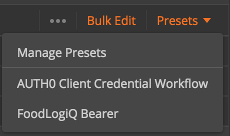
Another useful feature in Postman is the Presets for Headers which you can read in the Docs
Header Presets are useful if you find yourself reusing a lot of HTTP Header values often and you can simply set a preset to autofill the HTTP headers for you in one click.
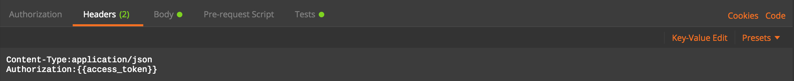
Notice here that we can use the group edit feature to quickly set header values in key value pairs in the group edit view.
You can easily go back to the normal view by clicking Key-Value Edit button again.
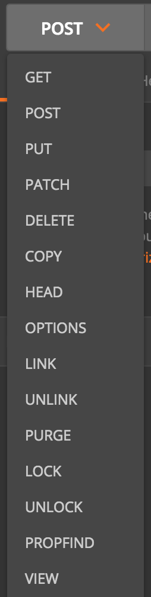
Postman supports all of the HTTP Verbs in their dropdown menu
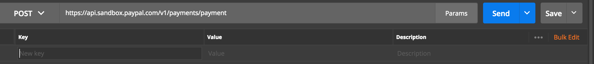
You can easily set query string parameters utilizing the params section in postman
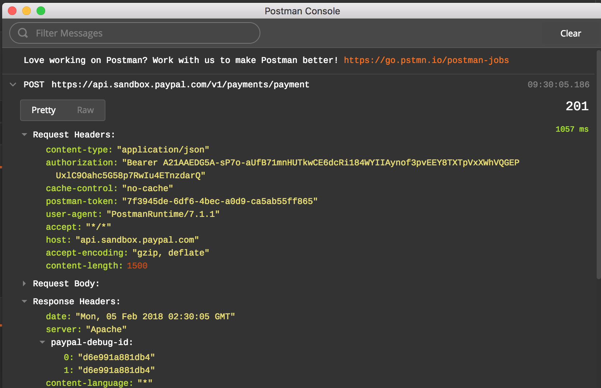
Notice here that we can utilize developer tools in Postman.
This is useful when you want to debug the Pre-request Script and Test script sections in Postman
You can easily set console.log statements to debug things.
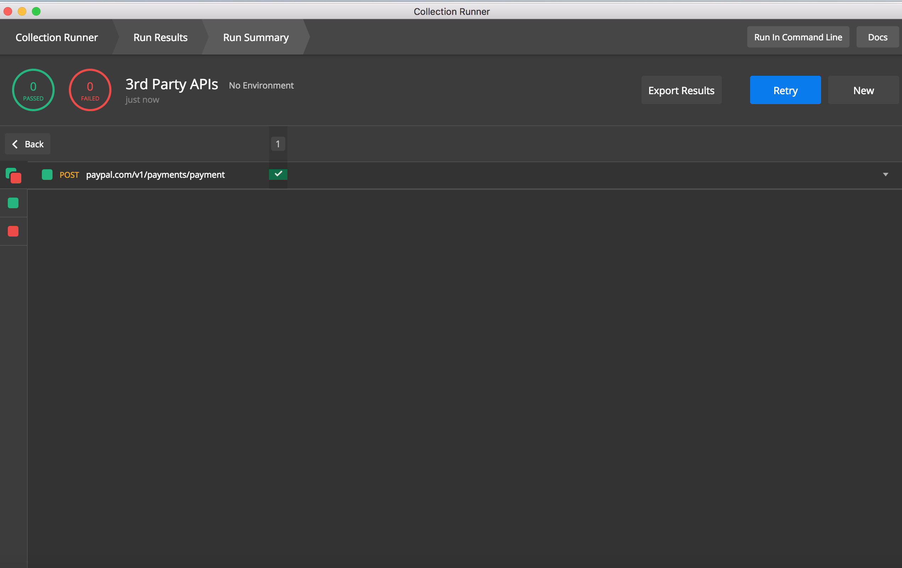
Notice here that we can run all of the collections utilizing the collection runner.
You can read more about the Postman Collection Runner Here
You can import Postman collections easily and if you have Postman Pro account you can share collections with team members.
I covered a good amount of features that Postman offers but read the Fine docs in Postman for more information.
Using Curl as a Rest Client
Curl is also a powerful tool to test apis
Here is a sample GET request using curl:
curl -X GET \
'http://{{URL}}/search?query=chromebook&format=json&apiKey={{API_key}}' \
-H 'Cache-Control: no-cache' \
-H 'Content-Type: application/xml'
Notice here that we specified the HTTP verb using the flag -X we then gave a url and we specified HTTP Headers using -H
Here is a sample POST request using curl:
curl -X POST \
https://api.sandbox.paypal.com/v1/payments/payment \
-H 'Authorization: afaketoken1234567' \
-H 'Cache-Control: no-cache' \
-H 'Content-Type: application/json' \
-d '{
"intent": "sale",
"payer": {
"payment_method": "paypal"
},
"transactions": [
{
"amount": {
"total": "30.11",
"currency": "USD",
"details": {
"subtotal": "30.00",
"tax": "0.07",
"shipping": "0.03",
"handling_fee": "1.00",
"shipping_discount": "-1.00",
"insurance": "0.01"
}
},
"description": "The payment transaction description.",
"custom": "EBAY_EMS_90048630024435",
"invoice_number": "48787589673",
"payment_options": {
"allowed_payment_method": "INSTANT_FUNDING_SOURCE"
},
"soft_descriptor": "ECHI5786786",
"item_list": {
"items": [
{
"name": "hat",
"description": "Brown hat.",
"quantity": "5",
"price": "3",
"tax": "0.01",
"sku": "1",
"currency": "USD"
},
{
"name": "handbag",
"description": "Black handbag.",
"quantity": "1",
"price": "15",
"tax": "0.02",
"sku": "product34",
"currency": "USD"
}
],
"shipping_address": {
"recipient_name": "Brian Robinson",
"line1": "4th Floor",
"line2": "Unit #34",
"city": "San Jose",
"country_code": "US",
"postal_code": "95131",
"phone": "011862212345678",
"state": "CA"
}
}
}
],
"note_to_payer": "Contact us for any questions on your order.",
"redirect_urls": {
"return_url": "https://www.example.com/return",
"cancel_url": "https://www.example.com/cancel"
}
}'
Notice in the POST request we used -d flag to pass in a body to the request.
Using HTTPie as a rest client
Here is an example POST request using HTTPie Rest Client
http --form POST https://api.sandbox.paypal.com/v1/oauth2/token \
'Authorization: Basic aFakeToken' \
'Content-Type: application/x-www-form-urlencoded' \
grant_type='client_credentials'
Using jq library for nice json output
Here is an example using jq library
curl -X POST \
https://api.sandbox.paypal.com/v1/oauth2/token \
-H 'Authorization: Basic afakeToken12345' \
-H 'Content-Type: application/x-www-form-urlencoded' \
-d grant_type=client_credentials | jq
This gives a nicely formatted json response with indents and all like this:
{
"scope": "https://uri.paypal.com/services/subscriptions https://api.paypal.com/v1/payments/.* https://api.paypal.com/v1/vault/credit-card https://uri.paypal.com/services/applications/webhooks openid https://uri.paypal.com/payments/payouts https://api.paypal.com/v1/vault/credit-card/.*",
"nonce": "2018-03-10T00:26:19Zs84muY6oGt55amkV4Yx7AdyPx5FBGYfTW-Z4FfXXECg",
"access_token": "A21AAGxDJPIqTppEqR_L_LbL3NOXrMPgLVH2pLG3f1U5s9WUJYiHkfLfbC0kC-fk_WbICqRIOmdRBtdEE-wr10VNNavtKzR-Q",
"token_type": "Bearer",
"app_id": "APP-80W284485P519543T",
"expires_in": 32398
}
Bread Crumb Navigation
| Previous | Next |
|---|---|
| ← Types of API Testing | API Security → |